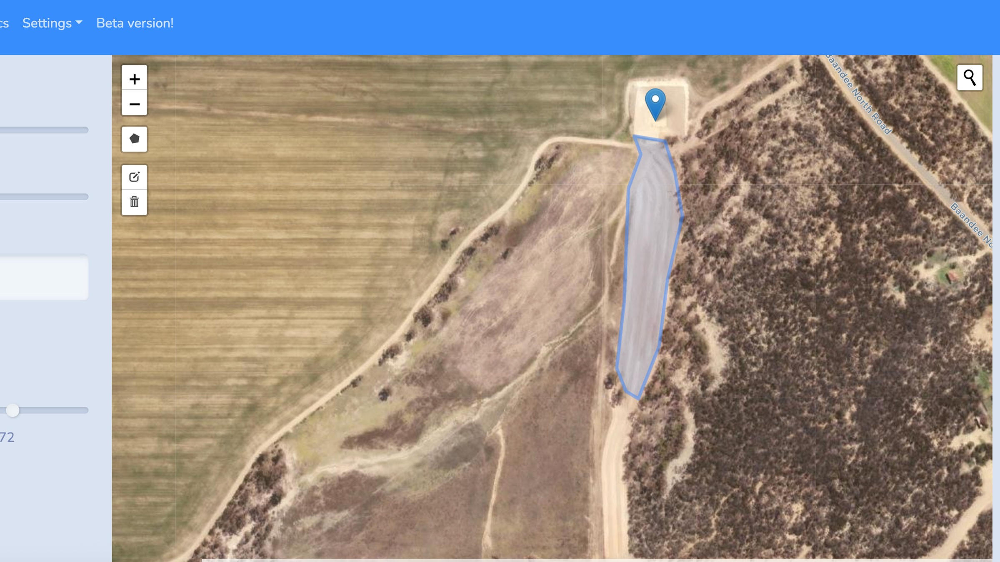
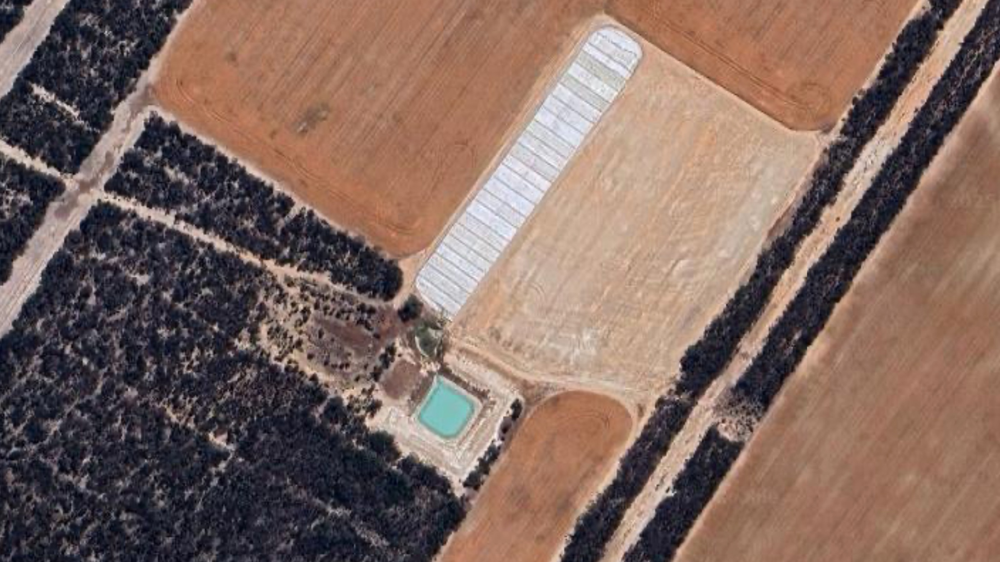
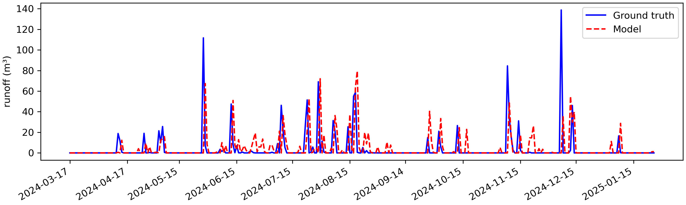

Water Evaluation Platform
The Water Evaluation Platform is a web application that provides an interface to dam water modelling tools to explore the performance and costs associated with different dams, roaded catchments, and evaporation treatments.
Water Smart Dams
WEP has been developed through the Water Smart Dams project. This project is developing knowledge and tools to help farmers and other water resource managers to make more informed water investment decisions and management decisions to improve the reliability of dam water supplies.
The Water Smart Dams project is jointly funded through the Australian Government’s Future Drought Fund (FDF) and the Western Australian state government’s Agriculture Climate Resilience Fund (ACRF), supported by the Department of Primary Industries and Regional Development (DPIRD).
For more information on the Water Smart Dams project, head to the Grower Group Alliance website.
The project has 12 core demonstration sites across Western Australia where various dam and catchment technologies have been installed and their performance in terms of generating a reliable water supply have been monitored. These technologies include renovating existing dams, building various types of roaded catchment, implementing evaporation suppression and runoff technologies.
Water Evaluation Platform features
Building on the detailed monitoring of dam and catchment technologies installed on farm demonstration sites, the Water Evaluation Platform (WEP) provides analytics tools to explore the performance of range of dam and catchment technologies across different geographic, farm, and water management contexts.


WEP has features for simulating dams on farms and dams that are used as part of an off-farm non-potable water supply, such as town dams.
You can use WEP to simulate the long-run performance of an existing dam, explore how an existing dam would perform with a different water demand scenario, or explore the reliability of hypothetical dam and water demands in a new location.


WEP provides a suite of analysis modes to optimise dam size, design roaded catchments to ensure sufficient runoff is generated, and assess the costs and benefits of fixing leaky dams and using evaporation covers.
Next steps
Explore the concepts, modelling tools, and analysis modes that comrpise WEP. Head to concepts.